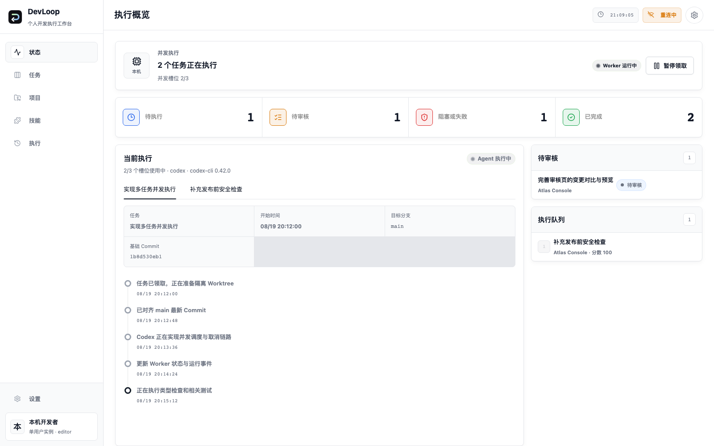
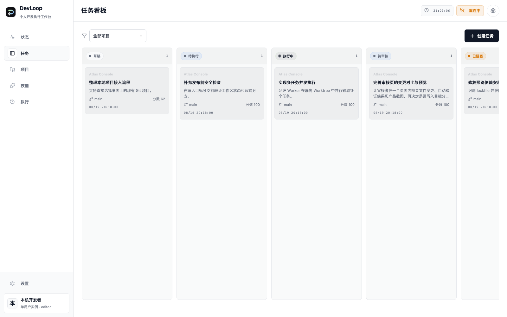

先把“做什么”说清楚
标题、任务目标、验收标准和目标分支在执行前固定成 Revision。驳回后继续迭代，也不会丢掉上一轮上下文。
目标→标准→Revision

LOCAL-FIRST · REVIEWABLE DELIVERY
让 AI 写代码，人来决定交付。
从任务目标与验收标准开始，把 Codex CLI 或 Claude Code CLI 放进隔离 Worktree。结果变成 Commit，验证变成证据，写入分支始终经过你的审核。
A delivery control plane
DevLoop 把 Agent 擅长的执行能力，放进一套可观察、可暂停、可回溯的本地工作流。每个任务都有明确的输入、过程和交付边界。
标题、任务目标、验收标准和目标分支在执行前固定成 Revision。驳回后继续迭代，也不会丢掉上一轮上下文。
Agent 在隔离目录中工作，结果以 Commit 固定下来。目标分支在执行期间变化，也不会悄悄覆盖你的本地修改。
并发 Worker、执行事件、基础 Commit 与结果 Commit 都在同一个任务记录里，过程不用靠猜。
Web 项目可以在结果 Commit 的隔离环境启动预览，运行 Playwright，保存截图、控制台错误和交互测试结果，再进入审核页。
看审核工作区THE DEVLOOP LOOP
每一步都留下可读的状态和可复核的产物。你可以同时推进多个项目，但不必放弃对最终分支的控制。
写下目标、验收标准、项目与分支。
在隔离 Worktree 中运行 Codex 或 Claude。
查看 Commit、Diff、日志和 Playwright 证据。
解决冲突、批准结果，或继续下一轮迭代。

TASK BOARD / 状态流转REVIEW PACKAGE
文件列表、代码对比、冲突处理、预览截图和测试结果聚在一起。审核者可以从证据出发，而不是重新打开整个项目猜测。
左侧按文件浏览变更，右侧查看统一 Diff；冲突文件可以在同一个工作区里解决。
LOCAL BY DEFAULT
数据库、Git 镜像、Worktree、Skill 和运行产物默认写在本机数据目录。
审核通过前不写入目标分支；目标分支变化或存在未解决冲突时，操作会停止。
Revision、事件、Commit、验证报告和审核决定都留在任务历史里。